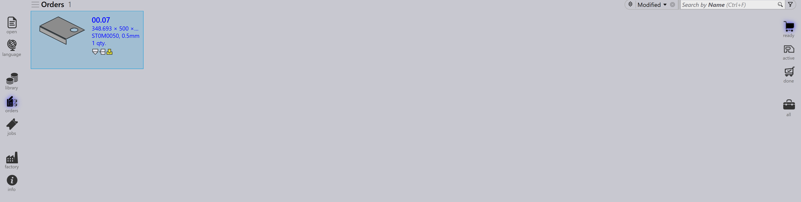

Zobrazení zakázek
Možnosti na pravé straně stránky Orders představují různá zobrazení zakázek na základě jejich fáze zpracování. Výběr zobrazení aktualizuje zobrazené zakázky, což umožňuje zaměřit se na konkrétní fáze pracovního postupu.
Ready
Výběr zobrazení Ready zobrazí zakázky, které jsou připraveny, ale dosud nepřevedeny na úlohy.

-
Zobrazuje zakázky připravené pro vytvoření úlohy.
-
Užitečné pro identifikaci zakázek čekajících na zpracování.
Active
Výběr zobrazení Active zobrazí zakázky, které byly převedeny na úlohy a jsou aktuálně zpracovávány.
-
Představuje zakázky již přesunuté do fáze Job.
-
Pomáhá sledovat zakázky, které jsou v provádění.
-
Užitečné pro monitorování probíhající výroby.
Done
Výběr zobrazení Done zobrazí zakázky, které dokončily zpracování.
-
Zobrazuje zakázky, jejichž přidružené úlohy jsou dokončeny.
-
Indikuje, že pracovní postup je dokončen.
-
Užitečné pro kontrolu a vedení záznamů.
All
Výběr zobrazení All zobrazí všechny zakázky bez ohledu na jejich fázi.

-
Poskytuje kompletní přehled všech zakázek.
-
Užitečné pro vyhledávání a správu napříč všemi fázemi.
Stavový pruh zakázky
Stavový pruh zobrazený pod každou dlaždicí zakázky indikuje, zda je zakázka propojena s úlohou. Existují dva typy:
-
Bez pruhu - zakázka není přiřazena k žádné úloze.
-
S pruhem - zakázka je součástí úlohy a pruh zobrazuje příslušný stav úlohy, jak je uvedeno níže.
| Order Status | Popis |
|---|---|
|
Not ready |
|
Ready |
|
Bend Planned |
|
Sheet missing |
|
Bending queue |
|
Cutting Queue |
|
Done(Completed) |